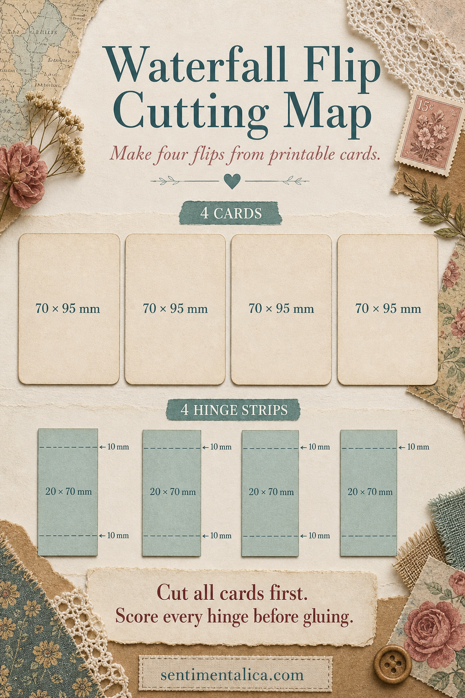
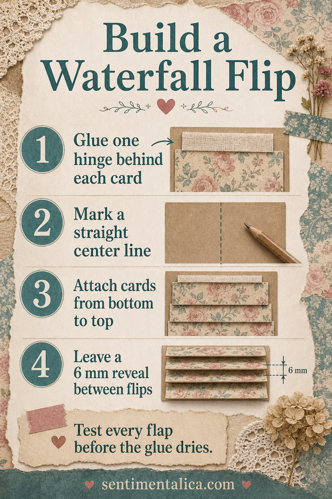
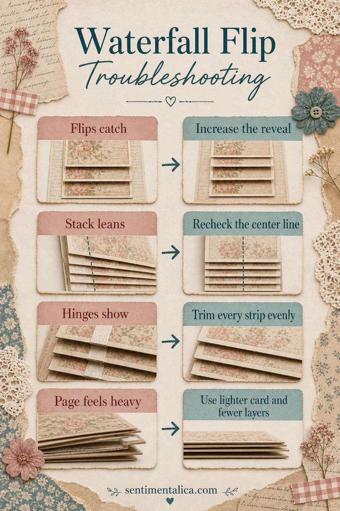
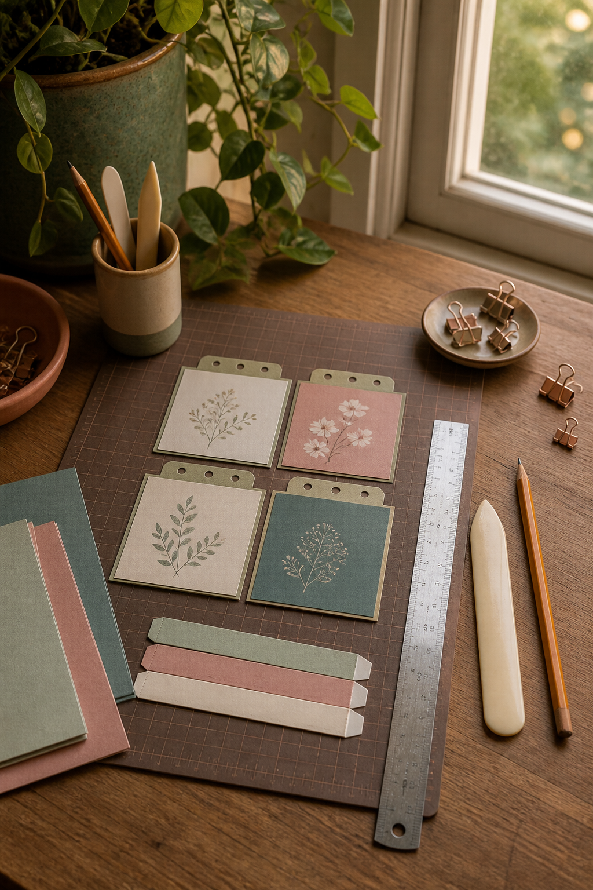

A waterfall flip turns four small printable cards into an interactive journal feature without hiding the writing space beneath them. The construction is simple, but clean results depend on identical cards, evenly scored hinges, and a consistent reveal.

Cut the cards and hinges
For a compact page, cut four cards to 70 × 95 mm. You may change the size, but keep every card identical. Cut four hinge strips to 20 × 70 mm. Score each strip lengthwise at 10 mm, creating two equal flaps. Fold with a bone folder so the hinge closes crisply.
Dry-stack the cards before gluing. Decide which image should appear first and which should become the final reveal. If the print has a directional motif, mark the back lightly with an arrow so nothing is attached upside down.

Attach one hinge to every card
Glue one half of each folded hinge behind the top edge of a card. Keep the fold exactly flush with the edge and press beneath scrap paper. On the journal page, draw a light vertical center line. Position the lowest card first. Glue the free half of its hinge to the page, then work upward.
Leave a 6 mm reveal between the lower edge of one card and the next. Measure the reveal on both sides before pressing the hinge down. Open and close each flap while the adhesive is still adjustable. The cards should lift without scraping the layer above.

Correct alignment before decorating
If the flips catch, increase the reveal by one or two millimetres. If the stack leans, stop and return to the center line rather than compensating with the next card. Visible hinges are usually caused by uneven strips. A heavy stack needs lighter card, fewer layers, or a stronger foundation page.

Give every hidden layer a purpose
Use the visible faces for imagery and the backs for dates, short memories, quotations, or tiny photographs. Avoid thick buttons and charms between layers. For coordinated cards and illustrations, explore the Sentimentalica printable image collections; print the chosen art at one scale, then trim every card with the same template.
Visuals in this article were created with AI assistance and art-directed for Sentimentalica.
Browse more useful paper constructions in the Sentimentalica journal archive.